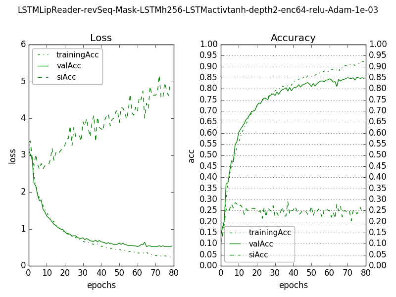

Critic - taking only video input and a predicted word
Training with top-3 predicted words from best lip reader
Accuracies: Train - 64.4%, Val - 64.5%, SI - 66.7%
ROC curve and Precision-Recall curve:
Figure 1: ROC curve and precision-recall curve for one set of weights of critic (at epoch number 16). The 'X' marks are at the values for threshold=0.5.
Figure 2: Accuracy of Critic with different values of threshold over the critic's scores.
Take Top-5 predictions of lipreader, find out critic's scores for them, multiply with lipreader's scores, find accuracy of lipreader (No. of correct predictions/total)
On a very good lipreader (above - epoch 79):
Train: Only LipReader - 91.51%, LipReader x Critic - 91.49%
Val: Only LipReader - 91.8%, only critic - 50.6%, LipReader x Critic - 91.4%
SI: Only LipReader - 24.3%, only critic - 20.5%, LipReader x Critic - 25.5%
On an average lipreader (epoch 35):
Train: Only LipReader - 82.5%, only critic - 46.7%, LipReader x Critic - 81.3%
Val: Only LipReader - 82.9%, only critic - 46.5%, LipReader x Critic - 81.4%
SI: Only LipReader - 22.6%, only critic - 19.7%, LipReader x Critic - 23.9%
On a very bad lipreader (epoch 0):
Train: Only LipReader - 13.4%, only critic - 22.8%, LipReader x Critic - 24.7%
Val: Only LipReader - 13.7%, only critic - 22.2%, LipReader x Critic - 24.3%
SI: Only LipReader - 9.7%, only critic - 13.3%, LipReader x Critic - 15.2%
CONCLUSION - critic doesn't offer much when the LR is awesome, but when the LR is bad the critic can improve accuracy

Figure 1: Loss and accuracy for training data, validation data and speaker-independent data, for Lip Reader using LSTM, with Masking at input and reverse sequence of frame input

Figure 2: Loss and accuracy for training data, validation data and speaker-independent data, for Critic taking only video sequence and predicted word as input. Training data consisted of video input and top-3 predicted words by lipreader.
Baseline Accuracy vs Threshold from softmax scores of LR
Only use critic in a region - when LR is dicey. If LR is very sure, ignore critic.
Additional information to Critic - fraction of scaling up or down the mouth image
Use case: self-learning?
Use LR x Critic on very few data
Train fusion